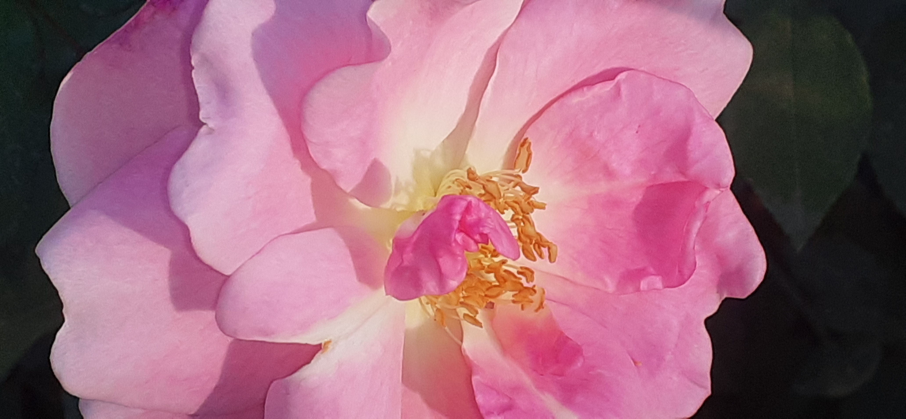

|

|
Camellia !!!!!!!
THIS IS A PIC OF Camellia FLOWER.THIS PICTURE IS CLICKED BY MR.AARYAN SINGH SACHAN.Camellia is a genus of flowering plants in the family Theaceae.
They are found in eastern and southern Asia, from the Himalayas east to Japan and Indonesia.
There are more than 220 described species, with some controversy over the exact number, and also around 3,000 hybrids.
In the U.S., camellias signify themes of love, admiration, longing, adoration, affection, devotion, desire, and passion.
In Japan, the camellia flower (or "tsubaki") is prized for its beauty and has associations with the sacred and the divine.
Importantly, camellias provide a source of nectar and food for pollinators such as honey bees and hummingbirds
during the cold winter months.
Camilla japonica is the “standard bearer” for camellias.
It has large, rounded leaves, a tight growth habit, and large flowers in shades of white, red or pink
Family: Theaceae
Order: Ericales
Genus: Camellia; L.
Kingdom: Plantae
Scientific name: Camellia
Order: Ericales
Camellia japonica · Camellia sinensis · Camellia sasanqua · Camellia oleifera
Camellia sasanqua is used as a garden plant, its leaves are used for tea, and its seeds for oil
|